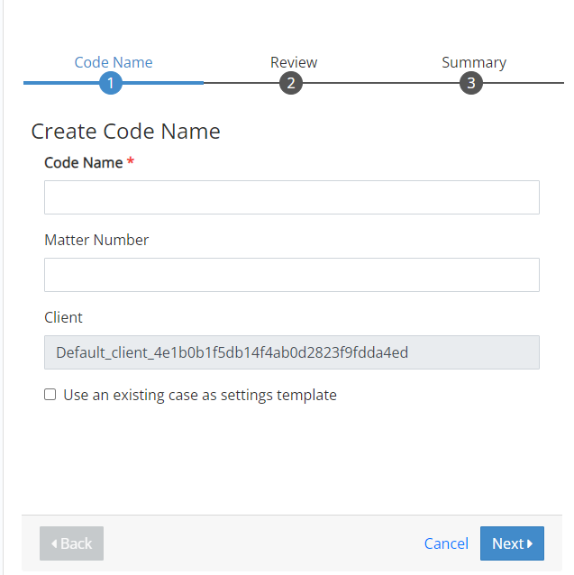

Note: Before you create a new case, ensure that the associated managing client and client have already been created. If not,
see
Case creation is easy in
Complete the following steps to create a new case in
|
|
Note: Before you create a new case, ensure that the associated managing client and client have already been created. If not,
see |
Open the Case Management module.

Take one of the following actions:
To associate the new case with a new code name: Click  corresponding to the required client and select Add Case.
corresponding to the required client and select Add Case.

To associate the new case with an existing code name: Click corresponding to the required code name and select Add Case.

On the Create
Case page, click the required case type(s), then select Create. To learn more about the different case types, see
On the Code Name step of the Create Case wizard, enter information for any of the following fields:

|
|
Note: These options are able to be modified only if associating the new case with a new code name. |
|
ITEM |
Description |
|
Code Name* |
Enter the new code name using a maximum of 256 Unicode characters. For example, “Smith v. Jones.” |
|
Matter Number |
Optional:
Enter a matter number using a maximum of 128 Unicode characters. A matter number is an additional internal identifier organizations may use to facilitate reporting. In |
|
Client |
Review the selected client. If the wrong client was selected, click Cancel and start again with the correct client. If you want to use an existing case as a settings template, check the box . |
Click Next. Complete the case details page(s) as described in the following table.
|
|
Note: Specific
pages/labels will differ, depending on the type of case you are
creating (Processing, Review, and/or |
|
ITEM |
Description |
|
Case Name* |
Enter the full name for the new case. By default, it will be the code name with a suffix indicating the case type. For example, “Smith v. Jones – Processing.” Ensure the name is unique. |
|
App Environment* |
Select the needed Processing and/or Review environment. Check with your administrator if you are not sure of the environment to select. |
|
Data Directory* |
For
Review cases, select the required data directory. The data directory
is where |
|
Connectors, Custodians, and Groups* |
For
|
|
Advanced Options |
|
Click Next to review the Summary page. If any items must be changed, click Back (or the required page button at the top of the page) and make corrections.
Click Create Case. Wait as the case is created. When finished, it displays in the Case Management page summary.
Related Topics